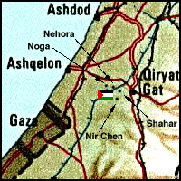

href="
Destroyed Palestinian Villages:
A Reign of Terror & Systematic Expulsion
Al-Faluja
Al-Faluja Before 1948

The village of Al-Faluja was situated on hilly terrain on the coastal plain (approx. location at  on map) and prior to the 19th century was bordered by a deep valley, Wadi al-Faluja, on the east, north, and west, giving the village a defensive advantage. Al-Faluja was the hub of a network of highways leading to Hebron, Jerusalem, Jaffa, Gaza, and other districts. According to the villagers, al-Faluja was founded on a site that had been known as Zurayq al-Khandaq. Zurayq means "blue" in Arabic and is the vernacular name for a leguminous plant with blue flowers, turmus (lupine), which grew around the village. The name was changed to al-Faluja to commemorate a Sufi master, Shahab al-Din al-Faluji, who came to Palestine from Iraq early in the fourteenth century, settled near the village, and was buried there.
on map) and prior to the 19th century was bordered by a deep valley, Wadi al-Faluja, on the east, north, and west, giving the village a defensive advantage. Al-Faluja was the hub of a network of highways leading to Hebron, Jerusalem, Jaffa, Gaza, and other districts. According to the villagers, al-Faluja was founded on a site that had been known as Zurayq al-Khandaq. Zurayq means "blue" in Arabic and is the vernacular name for a leguminous plant with blue flowers, turmus (lupine), which grew around the village. The name was changed to al-Faluja to commemorate a Sufi master, Shahab al-Din al-Faluji, who came to Palestine from Iraq early in the fourteenth century, settled near the village, and was buried there.
The Arab geographer al-Bakri al-Siddiqi, who journeyed through Palestine in the mid-eighteenth century, visited the tomb of Shaykh al-Faluji after passing through Bayt Jibrin. In 1596, al-Faluja was a village in the nahiya and liwa' of Gaza, with a population of 413. It paid taxes on a number of crops, including wheat, barley, sesame, and fruits, as well as on other types of produce and property, such as goats, beehives, water buffalos, and vineyards.
In the late nineteenth century, the nucleus of the village was centered around the shrine of Shaykh al-Faluji, with two communal wells to the east of the shrine and a small garden path to the west. In the 1930s, the residential area began to expand, and eventually crossed the wadi, bisecting the village into northern and southern sections. Bridges were constructed across the wadi to ease transport, and to allow passage in winter when the wadi often flooded. The center of al-Faluja shifted to the north, where modern houses, stores, a clinic, and coffee shops were erected. A school for boys was founded in 1919, and a girls school was opened in 1940. The boys' school had a plot of land for agricultural training, and a hostel with accommodations for 25 students. When enrollment reached 520 boys in 1947, it became a junior high school. Only eighty-three students were enrolled in the girls school in 1943.
The residents of al-Faluja were Muslims. They worshiped in a large mosque with three domed halls, one containing the tomb of Shaykh al-Faluji. The village also had several other minor shrines. The local council of the village was established in 1922. The council's revenues consistently exceeded its expenditures (which increased from 473 Palestinian pounds (�P) in 1929 to �P10,076 in 1944), and the tax base continued to grow [A Survey of Palestine 1947: Vol. I, Table 2]. The four wells that had supplied the villagers' domestic needs became insufficient after the village started to expand. On the eve of the war, the town council had initiated a project to draw water from a well near the village of Julis.
The inhabitants of al-Faluja were mainly employed in rainfed agriculture, growing grain, vegetables, and fruits. In 1944/45 a total of 36,590 dunums was allocated to cereals, and 87 to orchards. Commerce represented the second most important economic activity. A weekly market, attended by merchants and shoppers from the region's villages and towns, was held between Wednesday noon and Thursday noon on a special site which the town council had equipped with the necessary facilities. In addition to agriculture and commerce, the villagers engaged in animal husbandry, poultry raising, grain milling, embroidery, weaving, and pottery. Al-Faluja also had a dye house that attracted customers from all over the region.
Occupation and Depopulation
An early attack on al-Faluja was reported on 14 March 1948. Quoting Jewish
sources, The New York Times said that a "Jewish supply convoy" had engaged in a battle with villagers resulting in seven Jewish and thirty-seven Arab dead, with three Jews and "scores" of Arabs wounded. The convoy, which was escorted by Haganah armored cars, reportedly fought its way through the village and continued on, but according to an Associated Press report two days later, another detachment returned that same day with a Haganah demolition squad and blew up ten houses in al-Faluja, including the three-storey town hall and the post office. An attack had been mentioned by the Palestinian newspaper Filastin on 24 February but no details were given.
By late October of 1948, Israeli forces had besieged an Egyptian army brigade--that of future Egyptian president Gamal 'Abdel al-Nasir--in al-Faluja and the neighboring village of 'Iraq al-Manshiyya. At the end of the war in early 1949, the Egyptian force was still trapped in the "Faluja Pocket" with 3,140 Palestinian civilians. The enclave was handed over to Israel as part of the Israeli-Egyptian armistice agreement, but few civilians left when the Egyptian brigade withdrew. Israel promptly violated the armistice agreement and began to intimidate the populace into flight. United Nations observers reported that the intimidation included beatings, robberies, and attempted rape.
Israeli foreign minister Moshe Sharrett personally reprimanded the Israeli army's chief of staff for the acts committed by Israeli soldiers against civilians in the Faluja pocket. Sharrett said that in addition to overt violence, the Israeli army was busy conducting:
"a 'whispering propaganda' campaign among the Arabs, threatening them with attacks and acts of vengeance by the army, which the civilian authorities will be powerless to prevent. There is no doubt that there is a calculated action aimed at increasing the number of those going to the Hebron Hills as if of their own free will, and if possible, to bring about the evacuation of the whole civilian population of [the pocket]."
Israeli historian Benny Morris concludes that the decision to cause the exodus of the "Faluja pocket" population was approved by Israeli prime minister David Ben-Gurion. Subsequently, Israeli officials feigned outrage at what happened and misled the international community about Israel's involvment in the Faluja pocket. The director general of the Israeli Foreign Ministry, Walter Eytan, told U.S. ambassador James McDonald that Israel had broadcast "repeated reassuring notices" to the inhabitants to stay put. These notices were either ignored or not believed, and the civilians in Faluja acted, said McDonald, "as if they smelled a rat," and abandoned their homes. Eytan said the Arab population was "primitive [and] rumor-ridden."
Later, al-Faluja served as a cautionary example for populations in other areas of Palestine (mainly in the Galilee) where Israeli authorities hoped to achieve the same result during 1949, but with less success.
Israeli Settlements on Village Lands
The Israeli city of Qiryat Gat was established in 1954 on the lands of 'Iraq al-Manshiyya between that village and al-Faluja--it has now spread onto the lands of al-Faluja as well. Shahar, Noga, Nir Chen and Nehora were established in 1955 and 1956 on village lands (Return to map above).
The Village Today
The foundations of the village mosque and fragments of its walls are all that remain of al-Faluja. Debris is piled or scattered where the mosque once stood. A dilapidated well and a cistern are still visible. Israeli government offices and an airport have been built on the surrounding land.
Return to Destroyed Palestinian Villages index.
| About CRDPS | Race Against Time Project | CRDPS Archives |
| Complete Guide to Palestine's Websites - Academic & Research listings |
Material compiled by Rami Nashashibi, June 1996.
Page design by Birzeit Web Team, March 1997.
Center for Research and Documentation of Palestinian Society, Birzeit University, P.O. Box 14, Birzeit, West Bank, Palestine.
Tel: +972-2-998-2975, Fax: +972-2-995-2975, E-mail: center@research.birzeit.edu.